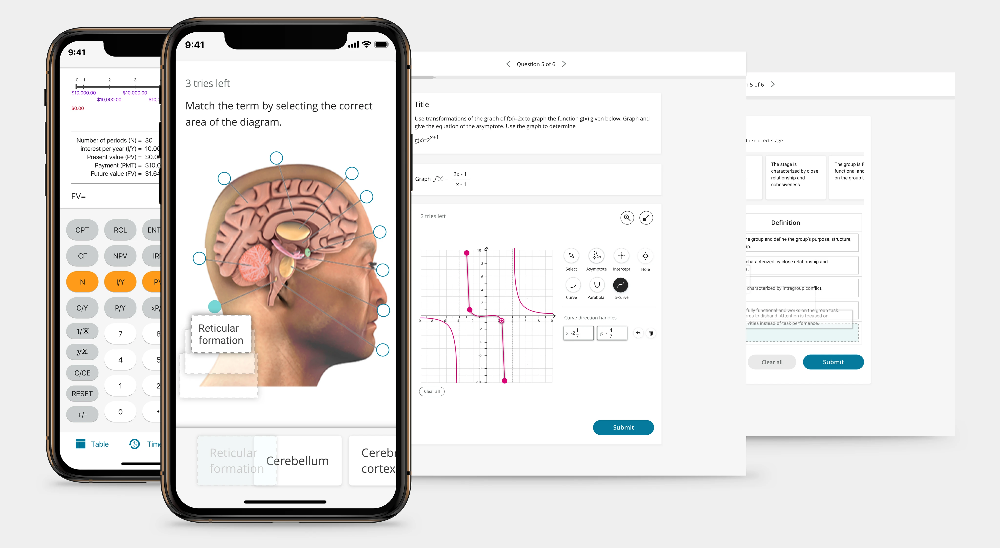
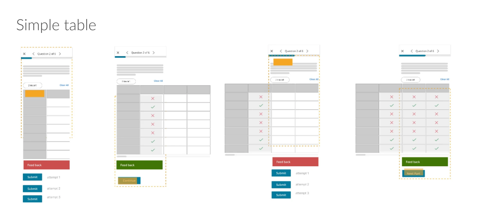
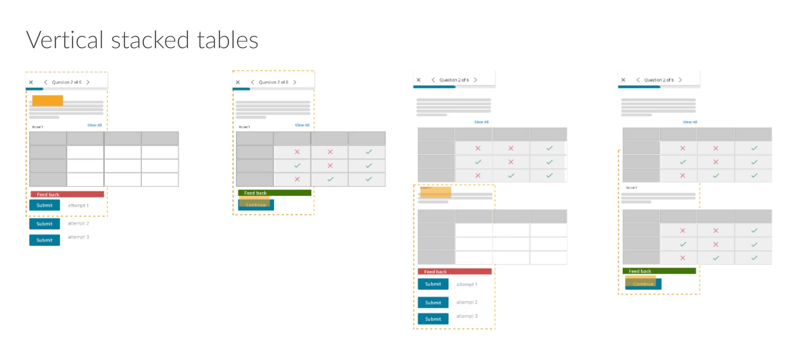
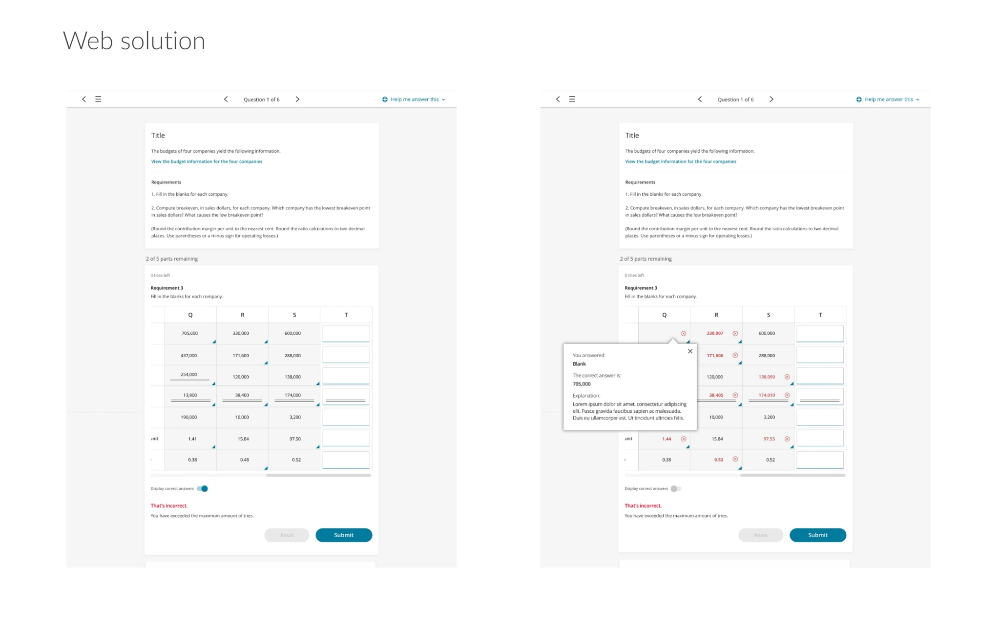
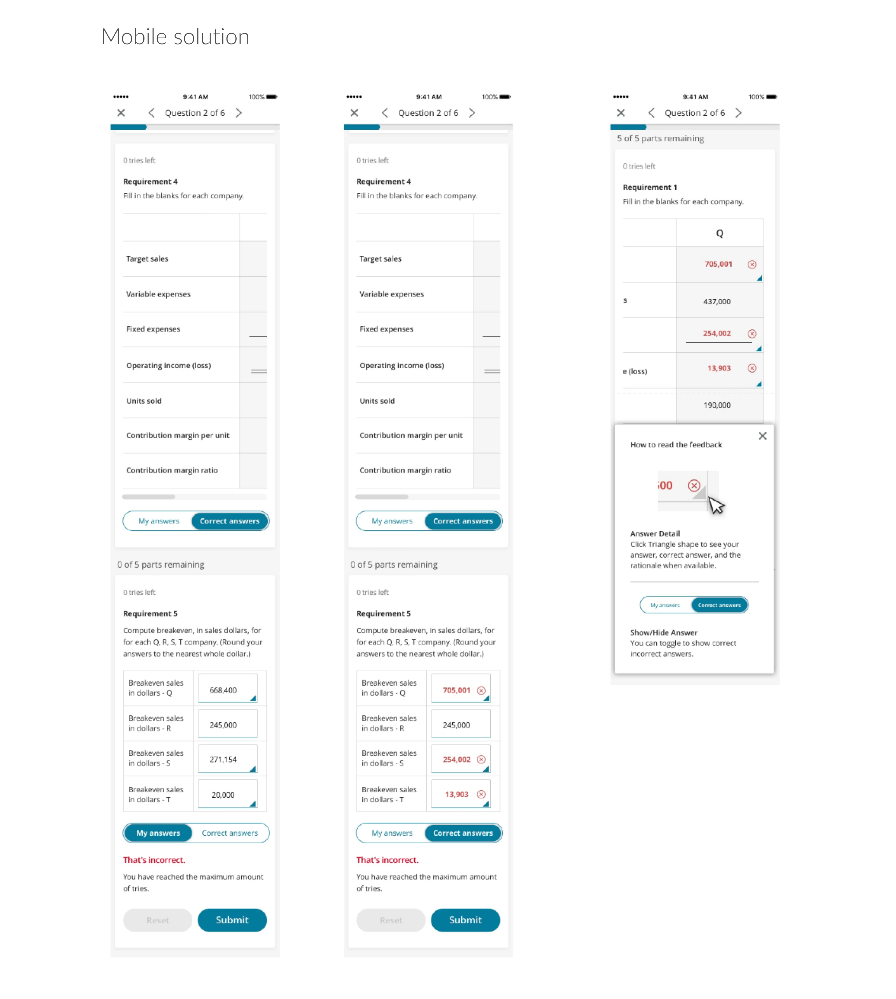
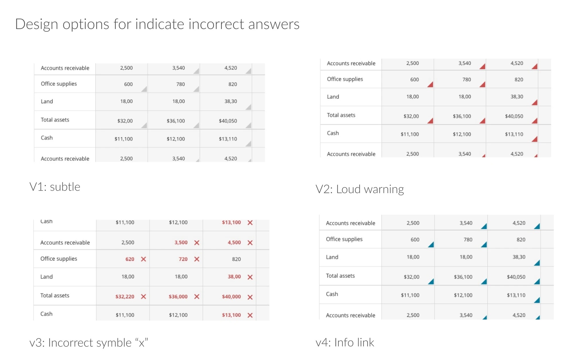

Tackle Interactive Question Types
Modernizing the assessment experience for learners

Project Overview
As an education sector product, we need to create the best user experience for reading and studying. Assessment becomes an essential experience in dire need of improvement and recommendations.
We have commonly used question banks accessible across all learning platforms that reach many students. These questions were locked into a very rigid format — the visuals were out of touch and behavior was outdated. In order to optimize the access and learning experience for learners, I was brought in to bring question types up-to-date and define a mobile strategy.
Rather than showing all the design types, I will demonstrate the design process through the Accounting Table question type.
Accounting Table
The accounting table within assessment becomes a challenging case: it only shows partial rows or columns as the user answers each entry. I had to decide which orientation is best. After researching how common apps like Microsoft Excel and Google Sheets behave on mobile, I proposed allowing content authors to set the table cell dimensions.
This design allows users to view information within the table clearly and avoid gesture conflict (scrolling vertically/horizontally vs. pinch to zoom).

Simple table: keeping the cell dimension allows users to focus on scrolling and avoid gesture confusion.

Fixing the table cell dimension without zoom avoids confusing gestures when multiple tables are stacked.
Web vs Mobile Solutions

Web solution design.

Mobile solution design.
Checking Answer Design
After determining the table cell behavior, the next challenge was showing results. The original design showed results in a new table below the existing table. A usability test revealed user frustration at the time it takes to scroll up and down to check answers against their own input — so showing answers inline became apparent.
The question became: "How might we show user input and the correct answer?" After iteration and usability testing, I decided to combine two approaches:
- Button switch: A toggle allows users to switch between their input and the correct answer.
- Indicator: After testing various iconography, the blue triangle is less visually invasive and intuitively signals users to click for more explanation.

Iterating on design options for showing correct answers inline.
Results
The newly designed question types were widely adopted by authors when creating interactive content. The mobile strategy and design process continued to serve as the key principle in ongoing question type redesign.